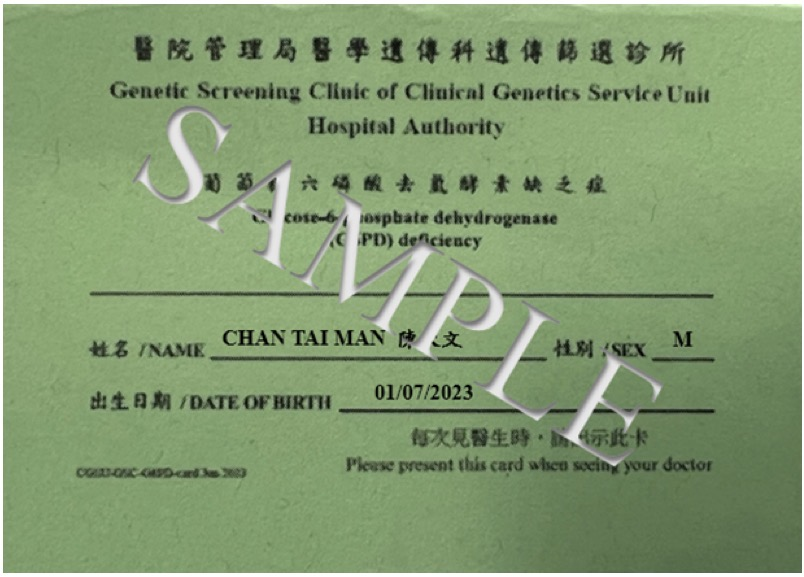

親身經驗
作為蠶豆症BB嘅媽媽
"
我每次買沐浴露、濕紙巾、痱子粉都要睇成分表。
由知道仔仔有蠶豆症嗰刻，老實講都慌過一輪，好多嘢以前買嘢唔使諗，而家樣樣都要停低check多幾秒。但做多幾次功課之後，其實識咗點揀，反而慢慢建立返一套自己嘅心法——蠶豆症唔會阻住BB正常成長，阻住嘅只係我哋未做好嘅功課。
所以我將呢啲我自己一路搵一路整理嘅資訊放喺呢度，希望幫到同樣啱啱知道BB有蠶豆症、仲喺度慌緊嘅爸爸媽媽。
— Lily
我仔仔都有蠶豆症，記得收藏呢份清單
🌱 蠶豆症唔可怕，識揀識避，BB一樣健康成長正式名稱係葡萄糖六磷酸去氫酵素缺乏症（G6PD缺乏症）。患者紅血球缺乏某種酵素，接觸特定物質時可能會引發溶血反應。
蠶豆症本身唔能夠根治，但只要避開誘發物，小朋友完全可以正常成長發育。
好常見但成日被忽略：保嬰丹好多長輩會俾BB食。探病禮物、坐月補品呢類，買之前一定要check成分，尤其係保嬰丹呢類常見中成藥。
呢類藥物必須由醫生／藥劑師把關，唔可以自行判斷邊隻藥安全。每次求醫、睇牙醫、睇急症，記得主動話俾醫護人員知BB有蠶豆症。
連放喺衣櫃都有風險，唔一定要直接接觸。屋企或者親戚屋企如果有用臭丸／防蟲片，要留意通風，同埋唔好將BB衣物直接放喺有臭丸嘅衣櫃。
呢個係飲食類入面最明確嘅避忌，買零食／伴手禮嗰陣留意食品標籤有冇蠶豆成分。
以下內容官方文件冇提及，維持「待確認」，唔係結論，僅供參考同了解坊間常見講法。
莓類（士多啤梨、藍莓等）係咪都要避免？
有人話莓類都要小心，但未有一致實證，建議問醫生。
待確認蠶豆同其他豆類（黃豆、青豆、眉豆）係咪都要避免？
蠶豆同其他豆類係唔同品種，一般認為冇直接關連，但個別體質有疑慮建議問醫生確認。
待確認薄荷係咪唔可以食／用？
有人話薄荷要小心，但未有一致實證，建議問醫生。
待確認奎寧（例如湯力水入面）係咪一定唔得？
有人話奎寧類物質要避免，但未有一致實證，建議問醫生。
待確認人工色素係咪都要避免？
有人話都要小心，但未有一致實證，建議問醫生。
待確認維他命C份量係咪要特別注意？
有人話高劑量維他命C要小心，但未有一致實證，建議問醫生。
待確認
呢張卡係BB最重要嘅隨身文件之一，建議放喺媽媽袋一個固定位置。
⚠️ 如有懷疑，請即刻求醫，唔好等
我每次買沐浴露、濕紙巾、痱子粉都要睇成分表。
由知道仔仔有蠶豆症嗰刻，老實講都慌過一輪，好多嘢以前買嘢唔使諗，而家樣樣都要停低check多幾秒。但做多幾次功課之後，其實識咗點揀，反而慢慢建立返一套自己嘅心法——蠶豆症唔會阻住BB正常成長，阻住嘅只係我哋未做好嘅功課。
所以我將呢啲我自己一路搵一路整理嘅資訊放喺呢度，希望幫到同樣啱啱知道BB有蠶豆症、仲喺度慌緊嘅爸爸媽媽。
— Lily
保嬰丹係好多長輩心目中嘅「傳統嬰兒必備」，坐月／探病送禮都好常見，但好少人會特登睇返成分。其實保嬰丹入面可能含有蠶豆症患者要避免嘅中藥成分，建議屋企長輩、月嫂、照顧者都要知道BB有蠶豆症，買任何中成藥前先問醫生或藥劑師。
唔係。官方確立嘅避忌其實範圍好明確（部分中藥、部分西藥、含萘日用品、蠶豆製品），日常飲食絕大部分食物都冇問題。識揀識避，BB可以正常成長發育。
蠶豆症屬遺傳性疾病，會唔會遺傳、遺傳機率點計，建議直接問返醫生或者做返詳細嘅遺傳諮詢，唔好自行估計。
出發前記得帶埋G6PD識別卡，最好都準備英文版嘅診斷證明或者醫生信，方便當地醫生睇診嗰陣快速了解BB嘅情況，亦要留意當地會唔會有含萘防蟲產品。